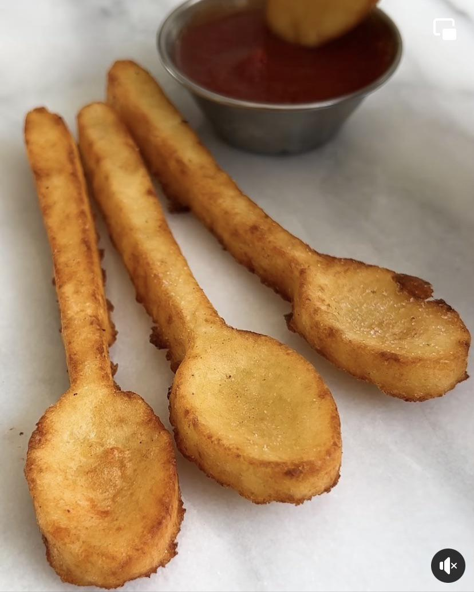

French Fry Spoons Recipe
These spoon-shaped french fries are a fun and creative twist on the classic side dish. The crispy, salty exterior pairs perfectly with the tender, fluffy interior, making for a delicious and satisfying snack or accompaniment to any meal. Try serving them with your favorite dipping sauces, such as ketchup or aioli, for an extra burst of flavor.

Ingredients:
- 2-3 large potatoes
- 2 tbsp of vegetable oil
- Salt to taste
- Pepper to taste
- Spoon-shaped molds
Instructions:
- Preheat the oven to 425°F (218°C).
- Wash and peel the potatoes, then slice them into thin strips.
- Soak the potato strips in cold water for about 30 minutes to remove excess starch.
- Drain the potatoes and pat them dry with a paper towel.
- Grease the spoon-shaped molds with vegetable oil.
- Starting from the bottom of the mold, tightly pack the potato strips into the mold, pressing them down to ensure that there are no gaps.
- Repeat the process with the remaining molds and potato strips.
- Brush the tops of the potato molds with vegetable oil, then sprinkle with salt and pepper.
- Place the molds on a baking sheet and bake for 20-25 minutes, or until the fries are golden brown and crispy.
- Remove the molds from the oven and let the fries cool for a few minutes before carefully removing them from the molds.
Back to Home
Recipe generated by ChatGPT. Ideas from /r/StupidFood